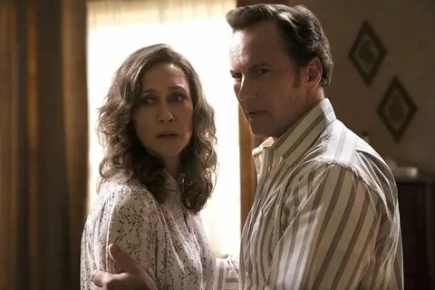
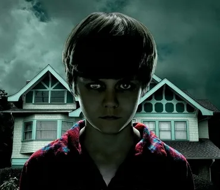

- The Conjuring
The Conjuring is a 2013 American supernatural horror film directed by James Wan and written by Chad Hayes and Carey W. Hayes. It is the first installment in The Conjuring Universe franchise. The film stars Patrick Wilson and Vera Farmiga as Ed and Lorraine Warren, paranormal investigators who help the Perron family, played by Ron Livingston and Lili Taylor, who are experiencing increasingly disturbing events in their farmhouse in Rhode Island in 1971.
- Insidious
Insidious is a 2010 American supernatural horror film directed by James Wan and written by Leigh Whannell. The film stars Patrick Wilson, Rose Byrne, Lin Shaye, and Barbara Hershey. The story follows a couple whose son falls into a coma and becomes a vessel for ghosts in an astral dimension.
- The Exorcist

The Exorcist is a 1973 American supernatural horror film directed by William Friedkin and written by William Peter Blatty, based on Blatty's 1971 novel of the same name. The film stars Ellen Burstyn, Max von Sydow, Jason Miller, Linda Blair, and Mercedes McCambridge. The story follows the demonic possession of a twelve-year-old girl and her mother's attempt to rescue her through an exorcism conducted by two priests.